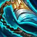
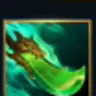

起手裝備
 紅水晶
紅水晶先補生命提高第一輪承傷與豪意反打容錯，後續再接鬥士核心。
Sett · 前排開戰／反打真傷型鬥士
不要把自己當純刺客。先靠血量與前排位置吸收第一輪傷害累積豪意，3 技能夾到兩側目標最好；2 技中央真傷要等豪意高時再交。大絕優先抱高生命前排砸進敵方後排。
本站當時評級理由：ARAM 正面碰撞讓賽特很容易累積豪意後用 2 技反打，3 技與大絕也能把前排丟回敵陣製造範圍控制；但官方 7.1d 已把所有咆哮深淵地圖的傷害修正降到 90%，限制了純輸出上限。
Riot 7.1d：Sett 在所有 Howling Abyss 地圖的傷害輸出由 100% 調整為 90%；後續至 7.2b 未見標準 ARAM 回調。
先補生命提高第一輪承傷與豪意反打容錯，後續再接鬥士核心。

生命、物攻、攻速與短位移緩速都能幫賽特更容易貼到目標並把人留在 3 技／2 技範圍。
把大量額外生命轉成物攻，低血時再強化輸出，和豪意反打玩法高度契合。
生命、技能加速與削甲都適合連續正面團戰，還能幫隊友處理前排。

提高技能循環，讓 2 技與 3 技在長團戰更有機會打第二輪。
被多人集火時提供關鍵護盾，讓賽特有時間把高豪意 2 技打出去。

正面承受普攻與物理爆發時最穩定，提升第一輪進場耐久。

升級三級鞋後進一步提高物理承傷能力；敵方法傷／控制極重時可改水星線。
賽特在近身長團戰很容易疊高層數，補足 90% 模式傷害修正後的持續輸出。

3 技與大絕控制都能配合護盾，提高進場後存活。
被遠程消耗時持續回復，減少還沒開戰就被磨殘。

單線小兵死亡密集，能穩定累積額外生命並轉化為狂霸血甲價值。

長時間貼身戰能逐步提高輸出，適合賽特正面纏鬥。

保留最可靠的進退與關鍵技能銜接；雪球戰車進場後仍可用閃現修正位置。

雪球命中後可等待隊友跟上再進場，讓近戰英雄在單線拉扯中擁有穩定的接戰與追擊角度。
2 技 > 1 技 > 3 技
ARAM 開局三個基礎技能各點 1 級，之後主升 2 技提高反打與護盾價值、次升 1 技；大絕能點就點。
先利用身板站在隊伍前方，但不要無腦衝塔。被消耗時讓回春維持血線，等敵方靠近再找 3 技左右夾人。
有狂霸血甲後，豪意越高 2 技威脅越大。大絕優先抱敵方高生命前排往後排砸，落地後接 3 技與 2 技製造第二波控制。
後期要辨認敵方最能打斷你的控制與位移。不要在豪意很低時就交 2 技；史特拉克護盾觸發後通常就是反手蓄意轟拳的最佳窗口。
 自然之力
自然之力可替換精進之矛，補魔抗與跑速。
 蘭頓之兆
蘭頓之兆需要更高護甲與抗暴擊時替換一件輸出裝。
延後爆發傷害，適合需要更強近戰續戰時使用。
獨立歷史資料：7.2b 分類評級。7.3a 僅有部分增幅公告欄位校正，英雄分類適配與出裝未因此全面重評；不套用到標準 ARAM。
看遊戲卡片下方分類 → 點相同分類 → 看左側 S+／S／A。
高生命與體型能直接提高前排容錯，也能間接放大豪意二技能的價值。
二技能會產生巨大護盾，護盾觸發類增幅能在反打瞬間創造額外收益。
三技能與大絕都有強控制，能穩定觸發控制型增幅。
一技能強化普攻且需要近身連打，普攻型增幅能直接參與輸出。
坦度、緩速與貼身控制很適合賽特在敵陣中央纏鬥。
部分硬控、韌性與護盾連動卡能提高賽特進場後的反打能力。
7.2b ARAM S 第五批：賽特保留 7.1d 標準 ARAM 90% 傷害修正，出裝改以團戰鬥士而非分推裝為主。｜v93 7.2d 標準 ARAM 全量校正：已複核 Tier、標準 ARAM 模式修正、7.2c／7.2d 英雄與道具、現行符文名稱及雪球戰車；無額外異動者沿用已驗證配置。